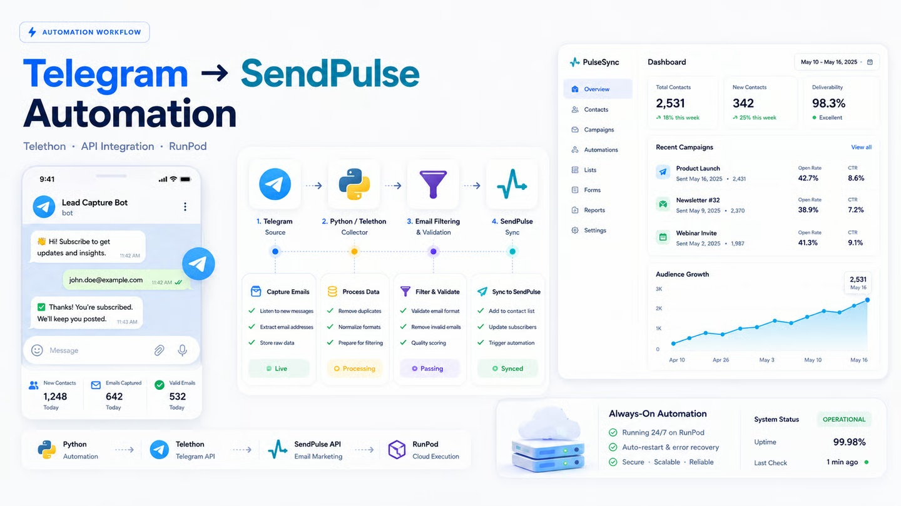
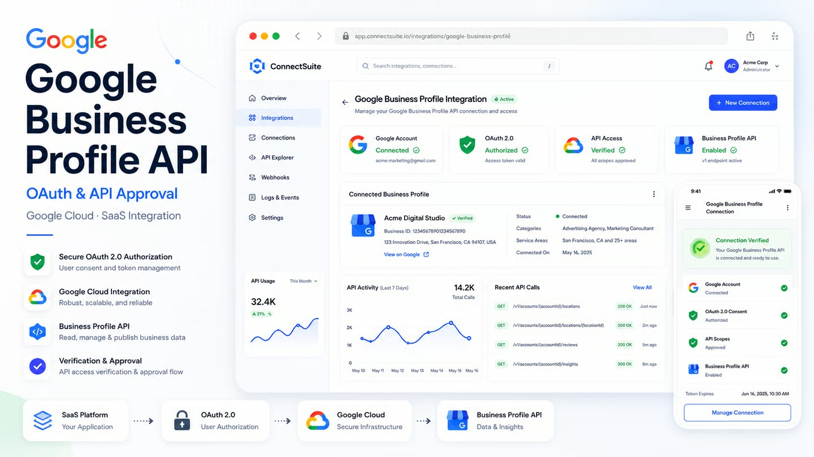

Telegram → SendPulse Automation
Turned manual Telegram contact transfer into an always-on email acquisition and synchronization pipeline.
Backend systems, automation pipelines, document AI, API integrations and recovery of difficult legacy projects — from technical audit to deployment and operational handoff.
Each case focuses on the engineering problem, the decisions made and the delivered result — not just a list of technologies.

Turned manual Telegram contact transfer into an always-on email acquisition and synchronization pipeline.
Production backend work around async orchestration, transactional consistency, external AI/data services and failure recovery.
$ git deploy dev ✓ nginx / PHP-FPM / MariaDB ✓ GitHub release workflow ✓ admin restored ! legacy HTTP 500 traced ! malicious module code neutralized ✓ reproducible DEV environment
Built a reproducible DEV environment, replaced manual SFTP deployment and stabilized critical failures in a damaged legacy stack.

Prepared a SaaS integration for renewed Google review after a previous rejection, including OAuth flow, demo and compliance materials.
Multi-modal extraction pipeline for invoices and sewer inspection reports across text PDFs, scans, phone photos and handwritten forms.
Recovered the iOS build path, deployed the backend to Azure, validated Work Orders and isolated production crash/offline-sync failures.
FastAPI, REST, PostgreSQL, SQLAlchemy, Redis, asynchronous services, migrations and integration boundaries.
Telegram, external APIs, background processing, retries, scheduling, synchronization, logging and operational handoff.
Text extraction, OCR/vision fallback, structured extraction, classification, validation and multi-modal pipelines.
Legacy codebases, build environments, production failures, deployment paths, root-cause analysis and stabilization plans.
I am most useful on projects where the difficult part is not writing one more endpoint — it is understanding where the system actually fails, choosing a maintainable boundary and getting the whole path to work under real conditions.
That can mean tracing a broken legacy mobile build, validating an OAuth approval path, making a data pipeline resilient to external failures or separating environment problems from business-logic defects.
Use this portfolio as a case-study overview. Add your preferred Upwork / email / Telegram contact link before publishing.
Back to work